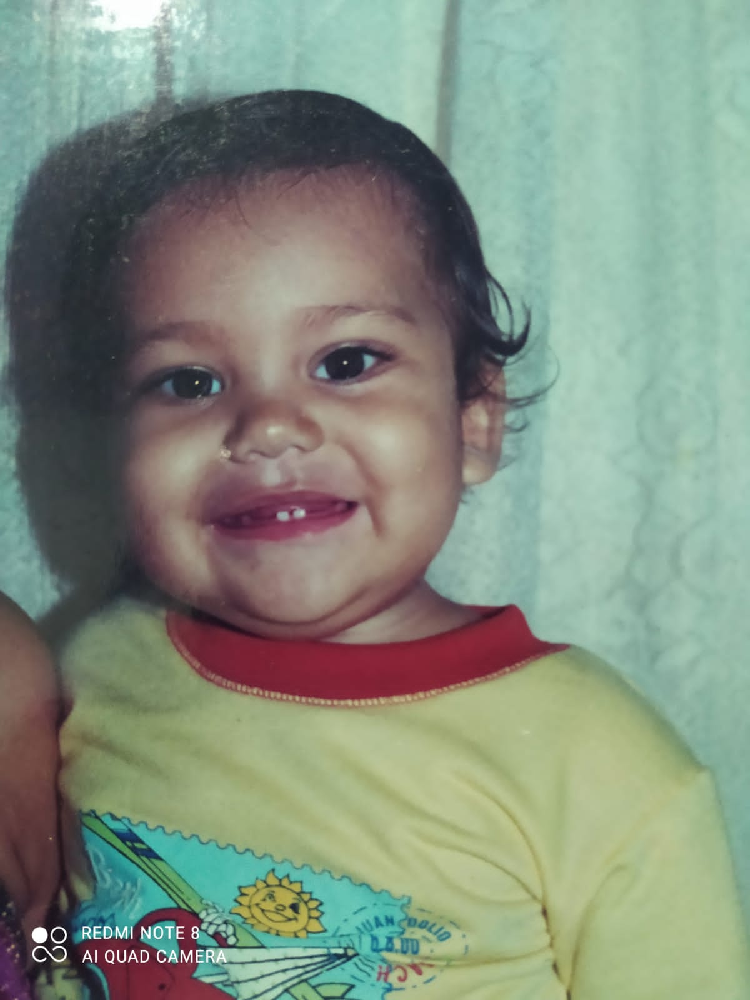
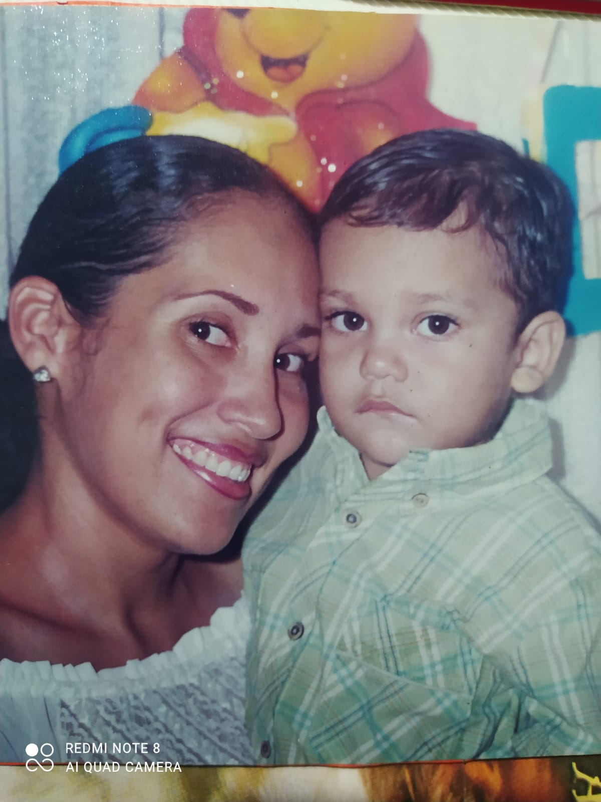

Mi historia comienza un 24 de junio del año 2000, cuando llegué a este mundo con los ojos bien abiertos y la cabeza llena de preguntas. Nací, crecí y me crie en Barranquilla, la ciudad que ha sido mi base, mi patio de juegos y mi zona de crecimiento constante.
Siempre he vivido con mis padres, mis dos hermanos y varias mascotas que han ido entrando y saliendo de nuestras vidas, pero que siempre dejaron
historias que contar. He vivido en dos casas diferentes: la primera fue el escenario de mi infancia, donde pasé horas jugando al aire libre, ensuciándome sin culpa y viviendo aventuras improvisadas con amigos del barrio.
Desde pequeño fui curioso y activo. Practiqué taekwondo, participé en clubes de robótica, y también le dediqué tiempo a la guitarra, aprendiendo acordes entre tardes largas y dedos entumecidos. Siempre me gustó crear cosas, moverme, explorar, y encontrarle la vuelta a todo lo que me llamara la atención.
En el recorrido académico, pasé por tres colegios y dos universidades... pero no por mala conducta ni por armar alboroto, ¡lo juro! Simplemente, soy alguien que busca donde se siente más cómodo, donde aprende mejor, o donde el uniforme no pique tanto. Digamos que siempre he sido selectivo con mis ambientes.
En 2023 me gradué como ingeniero electrónico, un logro que representa años de esfuerzo y también mucha pasión por la tecnología. Pero no me detuve ahí: por iniciativa propia empecé a aprender programación web, un camino donde he podido combinar lo técnico con lo creativo, y que hoy es una parte importante de lo que soy y lo que quiero seguir desarrollando.
Actualmente trabajo como desarrollador, y aunque disfruto lo que hago, sigo buscando expandir mis horizontes. Me apasiona la programación de verdad, así que sigo estudiando por mi cuenta, metiéndome en nuevos proyectos y manteniéndome en constante evolución. Además, tengo una meta a largo plazo que también me motiva: convertirme en trader profesional. Es otro mundo que me fascina, y que quiero explorar con la misma disciplina y curiosidad que me ha acompañado desde niño.
Mi historia está llena de cambios, aprendizajes, pasiones y muchas ganas de seguir creciendo, siempre buscando construir algo con sentido, con lógica... y si se puede, con estilo también.
primero hablare de mis gustos y luego de mis hobbies.
🎨 Tengo una conexión especial con el arte, pero no cualquier tipo de arte... me encanta el arte fantástico, ese que mezcla lo irreal con lo épico, que te transporta a otros mundos y activa la imaginación al máximo. También soy fan de las hamburguesas (sí, podría comerlas a toda hora), la música electrónica, que me carga de energía, y la música romántica, que me baja las revoluciones cuando hace falta.
Me gustan los aromas dulces, de esos que te envuelven sin ser empalagosos, y también el aire libre, porque disfruto la tranquilidad y la paz más de lo que muchos creerían. Soy de esos que aprecian un rato de silencio, una caminata sin ruido, o simplemente respirar sin prisas.
🎮 En cuanto a mis hobbies, soy gamer de corazón. Me encanta jugar videojuegos, sumergirme en historias, retos y mundos alternos. También soy fan de ver animes, especialmente los que tienen buenas tramas y personajes que se te quedan grabados.
Cuando tengo tiempo (que últimamente no es tanto 😅), me gusta entrenar en el gym y mantenerme activo. Es algo que me ayuda a soltar el estrés y recargarme. Ah, y no puedo olvidarme de los juegos de mesa, me parecen brutales para compartir con amigos, reírse un rato y poner a prueba la mente.
les dare unas cuantas recomendaciones de mi animes (cuando tenia mucho tiempo de verlos)